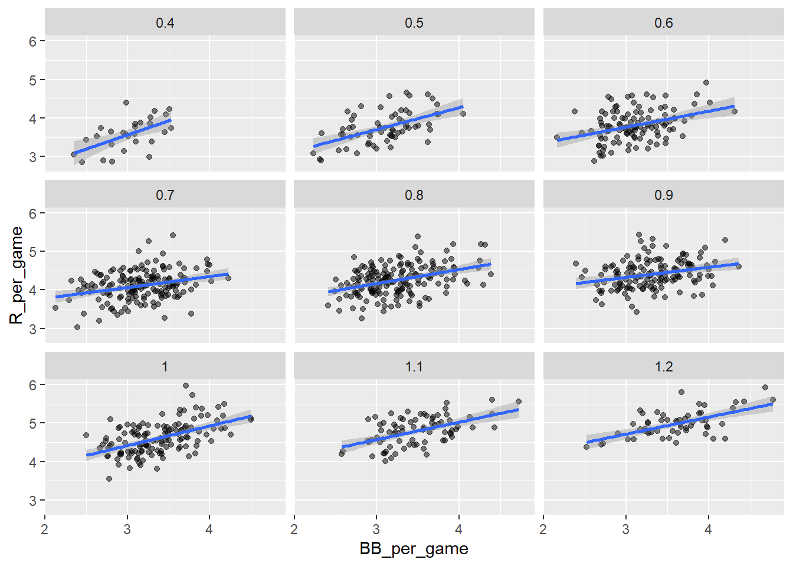

##
## Attaching package: 'dplyr'
## The following objects are masked from 'package:stats':
##
## filter, lag
## The following objects are masked from 'package:base':
##
## intersect, setdiff, setequal, union
library(ggplot2)
library(Lahman)
data(Teams)
head(Teams)
## yearID lgID teamID franchID divID Rank G Ghome W L DivWin WCWin LgWin
## 1 1871 NA BS1 BNA <NA> 3 31 NA 20 10 <NA> <NA> N
## 2 1871 NA CH1 CNA <NA> 2 28 NA 19 9 <NA> <NA> N
## 3 1871 NA CL1 CFC <NA> 8 29 NA 10 19 <NA> <NA> N
## 4 1871 NA FW1 KEK <NA> 7 19 NA 7 12 <NA> <NA> N
## 5 1871 NA NY2 NNA <NA> 5 33 NA 16 17 <NA> <NA> N
## 6 1871 NA PH1 PNA <NA> 1 28 NA 21 7 <NA> <NA> Y
## WSWin R AB H X2B X3B HR BB SO SB CS HBP SF RA ER ERA CG SHO SV
## 1 <NA> 401 1372 426 70 37 3 60 19 73 16 NA NA 303 109 3.55 22 1 3
## 2 <NA> 302 1196 323 52 21 10 60 22 69 21 NA NA 241 77 2.76 25 0 1
## 3 <NA> 249 1186 328 35 40 7 26 25 18 8 NA NA 341 116 4.11 23 0 0
## 4 <NA> 137 746 178 19 8 2 33 9 16 4 NA NA 243 97 5.17 19 1 0
## 5 <NA> 302 1404 403 43 21 1 33 15 46 15 NA NA 313 121 3.72 32 1 0
## 6 <NA> 376 1281 410 66 27 9 46 23 56 12 NA NA 266 137 4.95 27 0 0
## IPouts HA HRA BBA SOA E DP FP name
## 1 828 367 2 42 23 243 24 0.834 Boston Red Stockings
## 2 753 308 6 28 22 229 16 0.829 Chicago White Stockings
## 3 762 346 13 53 34 234 15 0.818 Cleveland Forest Citys
## 4 507 261 5 21 17 163 8 0.803 Fort Wayne Kekiongas
## 5 879 373 7 42 22 235 14 0.840 New York Mutuals
## 6 747 329 3 53 16 194 13 0.845 Philadelphia Athletics
## park attendance BPF PPF teamIDBR teamIDlahman45
## 1 South End Grounds I NA 103 98 BOS BS1
## 2 Union Base-Ball Grounds NA 104 102 CHI CH1
## 3 National Association Grounds NA 96 100 CLE CL1
## 4 Hamilton Field NA 101 107 KEK FW1
## 5 Union Grounds (Brooklyn) NA 90 88 NYU NY2
## 6 Jefferson Street Grounds NA 102 98 ATH PH1
## teamIDretro
## 1 BS1
## 2 CH1
## 3 CL1
## 4 FW1
## 5 NY2
## 6 PH1
Correlation Coefficient
Load the Lahman library. Filter the Teams data frame to include years from 1961 to 2001.
What is the correlation coefficient between number of runs per game and number of at bats per game?
filtered_teams <- Teams %>%
filter(yearID >= 1961 & yearID <= 2001)
head(filtered_teams)
## yearID lgID teamID franchID divID Rank G Ghome W L DivWin WCWin LgWin
## 1 1961 AL BAL BAL <NA> 3 163 82 95 67 <NA> <NA> N
## 2 1961 AL BOS BOS <NA> 6 163 82 76 86 <NA> <NA> N
## 3 1961 AL CHA CHW <NA> 4 163 81 86 76 <NA> <NA> N
## 4 1961 NL CHN CHC <NA> 7 156 78 64 90 <NA> <NA> N
## 5 1961 NL CIN CIN <NA> 1 154 77 93 61 <NA> <NA> Y
## 6 1961 AL CLE CLE <NA> 5 161 81 78 83 <NA> <NA> N
## WSWin R AB H X2B X3B HR BB SO SB CS HBP SF RA ER ERA CG SHO SV
## 1 N 691 5481 1393 227 36 149 581 902 39 30 NA NA 588 526 3.22 54 21 33
## 2 N 729 5508 1401 251 37 112 647 847 56 36 NA NA 792 687 4.29 35 6 30
## 3 N 765 5556 1475 216 46 138 550 612 100 40 NA NA 726 653 4.06 39 3 33
## 4 N 689 5344 1364 238 51 176 539 1027 35 25 NA NA 800 689 4.48 34 6 25
## 5 N 710 5243 1414 247 35 158 423 761 70 33 NA NA 653 575 3.78 46 12 40
## 6 N 737 5609 1493 257 39 150 492 720 34 11 NA NA 752 665 4.15 35 12 23
## IPouts HA HRA BBA SOA E DP FP name park
## 1 4413 1226 109 617 926 126 173 0.980 Baltimore Orioles Memorial Stadium
## 2 4326 1472 167 679 831 143 140 0.977 Boston Red Sox Fenway Park II
## 3 4344 1491 158 498 814 128 138 0.980 Chicago White Sox Comiskey Park
## 4 4155 1492 165 465 755 183 175 0.970 Chicago Cubs Wrigley Field
## 5 4110 1300 147 500 829 134 124 0.977 Cincinnati Reds Crosley Field
## 6 4329 1426 178 599 801 139 142 0.977 Cleveland Indians Cleveland Stadium
## attendance BPF PPF teamIDBR teamIDlahman45 teamIDretro
## 1 951089 96 96 BAL BAL BAL
## 2 850589 102 103 BOS BOS BOS
## 3 1146019 99 97 CHW CHA CHA
## 4 673057 101 104 CHC CHN CHN
## 5 1117603 102 101 CIN CIN CIN
## 6 725547 97 98 CLE CLE CLE
What is the correlation coefficient between number of runs per game and number of at bats per game?
Teams_small <- Teams %>% filter(yearID %in% 1961:2001)
cor(Teams_small$AB/Teams_small$G, Teams_small$R/Teams_small$G)
## [1] 0.6580976
What is the correlation coefficient between win rate (number of wins per game) and number of errors per game?
cor(Teams_small$W/Teams_small$G, Teams_small$E/Teams_small$G)
## [1] -0.3396947
What is the correlation coefficient between win rate (number of wins per game) and number of errors per game?
cor(Teams_small$X2B/Teams_small$G, Teams_small$X3B/Teams_small$G)
## [1] -0.01157404
p <- Teams %>% filter(yearID %in% 1961:2001 ) %>%
mutate(AB_per_game = AB/G, R_per_game = R/G) %>%
ggplot(aes(AB_per_game, R_per_game)) +
geom_point(alpha = 0.5)
p

The qq-plots confirm that the normal approximation is useful here:
Teams %>% filter(yearID %in% 1961:2001 ) %>%
mutate(z_HR = round((HR - mean(HR))/sd(HR)),
R_per_game = R/G) %>%
filter(z_HR %in% -2:3) %>%
ggplot() +
stat_qq(aes(sample=R_per_game)) +
facet_wrap(~z_HR)

Given the figure below, explain how to describe the slope of the regression line:

The slope is . Expressed in words, the slope is the correlation coefficient of the son and father heights times the standard deviation of the sons’ heights divided by the standard deviation of the fathers’ heights.
Why does the regression line simplify to a line with intercept zero and slope p when we standardize our x and y variables?
When we standardize variables, both x and y will have a mean of zero and a standard deviation of one. When you substitute this into the formula for the regression line, the terms cancel out until we have the following equation:
What is a limitation of calculating conditional means?
Some limitations of calculating conditional means include: each specific stratum used for conditioning may not have data points, because there are limited data points for each stratum there may be large standard errors on the means, and conditional means are less stable than a regression line. Conditional means can be calculated, so it is not correct that they are only useful as a theoretical tool.
A regression line is the best prediction of Y given we know the value of X when:
X and Y follow a bivariate normal distribution.
Which one of the following scatterplots depicts an x and y distribution that is NOT well-approximated by the bivariate normal distribution?

Explanation: The v-shaped distribution of points from the first plot means that the x and y variables do not follow a bivariate normal distribution. When a pair of random variables is approximated by a bivariate normal, the scatter plot looks like an oval (as in the 2nd, 3rd, and 4th plots) - it is okay if the oval is very round (as in the 3rd plot) or long and thin (as in the 4th plot).
We previously calculated that the correlation coefficient between fathers’ and sons’ heights is 0.5. Given this, what percent of the variation in sons’ heights is explained by fathers’ heights?
`When two variables follow a bivariate normal distribution, the variation explained can be calculated as p^2 x 100
set.seed(1989, sample.kind="Rounding") #if you are using R 3.6 or later
## Warning in set.seed(1989, sample.kind = "Rounding"): non-uniform 'Rounding'
## sampler used
library(HistData)
data("GaltonFamilies")
female_heights <- GaltonFamilies %>%
filter(gender == "female") %>%
group_by(family) %>%
sample_n(1) %>%
ungroup() %>%
select(mother, childHeight) %>%
rename(daughter = childHeight)
female_heights <- GaltonFamilies %>%
filter(gender == "female") %>%
group_by(family) %>%
sample_n(1) %>%
ungroup() %>%
select(mother,childHeight) %>%
rename(daughter = childHeight)
female_heights
## # A tibble: 176 x 2
## mother daughter
## <dbl> <dbl>
## 1 67 69
## 2 66.5 65.5
## 3 64 68
## 4 64 64.5
## 5 58.5 62.5
## 6 68 69.5
## 7 68 64
## 8 66.5 66
## 9 66 66
## 10 65.5 65.5
## # ... with 166 more rows
r <- cor(female_heights$mother, female_heights$daughter)
s_y <- sd(female_heights$daughter)
s_x <- sd(female_heights$mother)
r * s_y/s_x
## [1] 0.2885842
Slope of regression line = (correlation coefficient of daughters’ heights given mothers’ heights) * (standard deviation of daughters’ heights / standard deviation of mothers’ heights)
0.285 * (2.3154/2.289292)
## [1] 0.2882503
Compute a regression line to predict the daughter’s height from the mother’s height
mu_x <- mean(female_heights$mother)
mu_y <- mean(female_heights$daughter)
s_x <- sd(female_heights$mother)
s_y <- sd(female_heights$daughter)
r <- cor(female_heights$mother, female_heights$daughter)
m <- r * s_y / s_x
b <- mu_y - m*mu_x
m_2 <- r * s_y / s_x
b_2 <- mu_y - m_2*mu_x
b_2
## [1] 45.64795
Linear Models
Regression allows us to find relationships between two variables while adjusting for others. This method is popular in fields where randomized experiments are hard to run such as economics and epidemiology.
When we are not able to randomly assign each individual to a treatment or control group, confounding is particularly prevalent. For example, consider estimating the effects of any fast foods on life expectancy using data collected from a random sample of people. Fast food consumers are more likely to be smokers, drinkers, and have lower incomes. Therefore, a naive regression model may lead to an overestimate of a negative health effect of fast foods.
So do we adjust for confounding in practice? We can use regression. If the data is bivariate normal, then the conditional expectation follow a regression line. However in practice it is common to explicitly wirte down a model that describes the relationship between two or more variables using what is called a linear model. Here, a linear model refers to the fact that the conditional expectation is a linear combination of known quantities.
Confounding
## Warning in (function (kind = NULL, normal.kind = NULL, sample.kind = NULL) :
## non-uniform 'Rounding' sampler used
## -- Attaching packages --------------------------------------- tidyverse 1.3.1 --
## v tibble 3.1.2 v purrr 0.3.4
## v tidyr 1.1.3 v stringr 1.4.0
## v readr 1.4.0 v forcats 0.5.1
## -- Conflicts ------------------------------------------ tidyverse_conflicts() --
## x dplyr::filter() masks stats::filter()
## x dplyr::lag() masks stats::lag()
library(Lahman)
get_slope <- function(x, y) cor(x, y) * sd(y) / sd(x)
bb_slope <- Teams %>%
filter(yearID %in% 1961:2001 ) %>%
mutate(BB_per_game = BB/G, R_per_game = R/G) %>%
summarize(slope = get_slope(BB_per_game, R_per_game))
bb_slope
## slope
## 1 0.7353288
So does this mean that if we go and hire low salary players with many BB, and who therefore increase the number of walks per game by 2, our team will score 1.5 more runs per game?
We are again reminded that association is not causation. The data does provide strong evidence that a team with two more BB per game than the average team, scores 1.5 runs per game. But this does not mean that BB are the cause.
Note that if we compute the regression line slope for singles we get:
singles_slope <- Teams %>%
filter(yearID %in% 1961:2001 ) %>%
mutate(Singles_per_game = (H-HR-X2B-X3B)/G, R_per_game = R/G) %>%
summarize(slope = get_slope(Singles_per_game, R_per_game))
singles_slope
## slope
## 1 0.4494253
Which is a lower value than what we obtain for BB.
Also, notice that a single gets you to first base just like a BB. Those that know about baseball will tell you that with a single, runners on base have a better chance of scoring than with a BB. So how can BB be more predictive of runs? The reason this happen is because of confounding. Here we show the correlation between HR, BB, and singles:
Teams %>%
filter(yearID %in% 1961:2001 ) %>%
mutate(Singles = (H-HR-X2B-X3B)/G, BB = BB/G, HR = HR/G) %>%
summarize(cor(BB, HR), cor(Singles, HR), cor(BB, Singles))
## cor(BB, HR) cor(Singles, HR) cor(BB, Singles)
## 1 0.4039313 -0.1737435 -0.05603822
It turns out that pitchers, afraid of HRs, will sometimes avoid throwing strikes to HR hitters. As a result, HR hitters tend to have more BBs and a team with many HRs will also have more BBs. Although it may appear that BBs cause runs, it is actually the HRs that cause most of these runs. We say that BBs are confounded with HRs. Nonetheless, could it be that BBs still help? To find out, we somehow have to adjust for the HR effect. Regression can help with this as well.
Understanding confounding through stratification
A first approach is to keep HRs fixed at a certain value and then examine the relationship between BB and runs. As we did when we stratified fathers by rounding to the closest inch, here we can stratify HR per game to the closest ten. We filter out the strata with few points to avoid highly variable estimates:
dat <- Teams %>% filter(yearID %in% 1961:2001) %>%
mutate(HR_strata = round(HR/G, 1),
BB_per_game = BB / G,
R_per_game = R / G) %>%
filter(HR_strata >= 0.4 & HR_strata <=1.2)
and then make a scatterplot for each strata:
dat %>%
ggplot(aes(BB_per_game, R_per_game)) +
geom_point(alpha = 0.5) +
geom_smooth(method = "lm") +
facet_wrap( ~ HR_strata)
## `geom_smooth()` using formula 'y ~ x'

